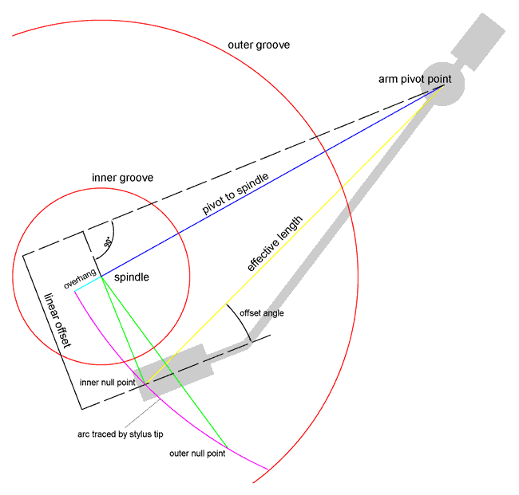

Słowniczek
Dlaczego warto znać angielską nomenklaturę?
Ponieważ najbardziej wartościowe dokumenty i opracowania dotyczące ustawiania gramofonu dalej są w języku angielskim i dopóki się to nie zmieni (czyli nigdy) warto znać angielskie słownictwo związane z zagadnieniem, które was interesuje.
- Mounting distance lub pivot to spindle - odległość montażowa, odległość między osią obrotu ramienia gramofonu, a osią obrotu talerza gramofonu.
- Effective length - odległość skuteczna, odległość między osią obrotu ramienia gramofonu, a dowolnym z punktów zerowych.
- Overhang - przewieszenie, różnica między odległością montażową, a odległością skuteczną.
- Pivot lub arm pivot point - oś obrotu ramienia gramofonu.
- Spindle - trzpień, oś obrotu talerza gramofonu.
- Offset angle - kąt przegięcia, kąt pomiędzy linią biegnącą od igły do osi obrotu ramienia, a osią równoległą do wkładki gramofonowej.
- Linear offset - przesunięcie liniowe, najkrótsza odległość pomiędzy dwiema równoległymi liniami: jedna jest równoległa do wkładki gramofonowej i przechodzi przez igłę, a druga przechodzi przez punkt obrotu ramienia.
- Inner null point - wewnętrzny punkt zerowy, punkt bliżej osi talerza gramofonu, dla którego igła jest równolegle ustawiona do rowka.
- Outer null point - zewnętrzny punkt zerowy, punkt dalej od osi talerza gramofonu dla którego igła jest równolegle ustawiona do rowka.
- Inner groove - wewnętrzna/ostatnia ścieżka odtwarzania płyty gramofonowej.
- Outer groove - zewnętrzna/ostatnia ścieżka odtwarzania płyty gramofonowej.